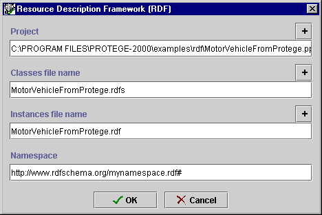

Saving an RDF Project
Saving an RDF Project

This version of Protégé-2000 provides support for creating and editing
Resource Description Framework (RDF) schema
and instance data. (For more
information about RDF, see http://www.w3.org/RDF.)
You can use
Protégé-2000 to design RDF schema and create the corresponding instance data. You can
also view and edit your existing RDF files in Protégé-2000.
You can save your Protégé-2000 project in RDF format in one of two ways:
- When the project is first created, by selecting Resource Description
Framework (RDF) in the Select Format dialog box.
- By selecting Save in Format... from the Project menu and
then selecting Resource Description Framework (RDF) in the Select
Format dialog box. Subclasses of :THING from a non-RDF project
will become subclasses of rdfs:Resource when you save as RDF.
After you have chosen your format, choose the name and location for the
project as follows:
- When you have selected Resource Description Framework (RDF), the
RDF dialog box is displayed:

- To select or change the name or location of the pprj file, enter
the information you want in the Project line of the dialog box. Be sure to give
the file a pprj
extension. To browse for a new location, cllick the
 button. If you do not
specify a location for the project, by default, the project is saved in the
directory where Protégé-2000 is installed.
button. If you do not
specify a location for the project, by default, the project is saved in the
directory where Protégé-2000 is installed.
- Protégé-2000 will create two files: one for the schema (classes and
slots) and the other for the instances. By default, these use the name of the existing pprj
file. If you wish to change the name of the schema file,
type the new name in the Classes file name line of the dialog
box. Make sure to give the file an .rdfs extension.
- If you wish to change the name of the instances file,
type the new name in the Instances file name line of the dialog
box. Make sure to give the file an .rdf extension.
- Enter the RDF namespace for your project in the Namespace field. All
classes, slots, ad instances i the project are placed in this namespace.
- Click OK.
You should create new RDF classes as
subclasses of rdfs:Resource.
Next: Importing a Project
Project Table of Contents